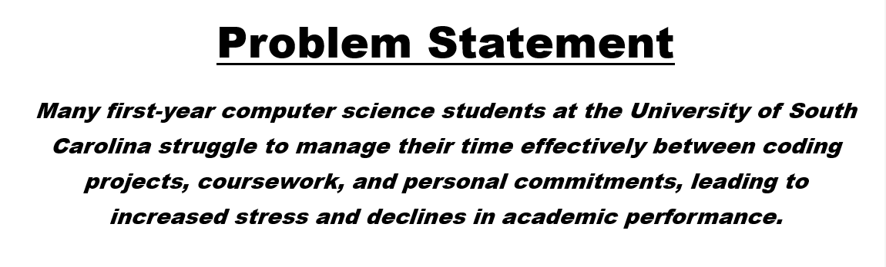

Highlighted projects
Problem Statement
Many first-year computer science students at the University of South Carolina struggle to manage their time effectively between coding projects, coursework, and personal commitments, leading to increased stress and declines in academic performance.
Affinity Diagram

Time management problems among first-year CS students at USC stem from five connected causes — inaccurate time estimation, weak motivation, lack of digital organization tools, limited academic support, and declining well-being. These issues reinforce one another, leading to stress, missed deadlines, and lower academic performance.